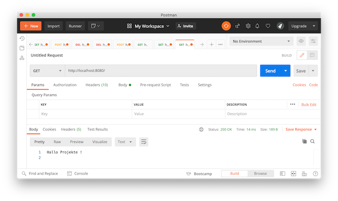

Backend¶
Zur Implementierung des Backends verwenden wir in dieser Anleitung node.js.
Installation¶
Dort finden Sie auch die Download-Seite von node.js für alle Betriebssysteme. Sollten Sie node.js auf dem virtuellen Server installieren wollen oder müssen, dann geht dies mittels
sudo kann weggelassen werden, wenn Sie das Kommando bereits als root ausführen. Nach erfolgreicher Installation sollte die Eingabe von
die Versionsnummer der installierten Instanz ausgeben, z.B. v12.19.0.
Projekt erstellen¶
Wir erstellen uns einen Ordner backend. Wechseln Sie in diesen Ordner und geben Sie ein:
Es wird eine package.json erstellt. Dafür werden Ihnen einige Fragen gestellt. Die meisten können Sie einfach mit Enter bestätigen (die Frage nach dem test command:) bleibt dann erstmal unbeantwortet. Bei der Frage nach dem git repository wäre es gut, wenn Sie sich bereits ein passendes Repository bei Ihrem Git-Host angelegt haben und dieses dann hier verbinden können (bei mir z.B. https://github.com/jfreiheit/backend.git).
Die entstandene package.json könnte dann z.B. so aussehen:
{
"name": "backend",
"version": "1.0.0",
"description": "Backend für Projekte-Anleitungen",
"main": "server.js",
"scripts": {
"test": "echo \"Error: no test specified\" && exit 1",
"start": "node server.js"
},
"repository": {
"type": "git",
"url": "git+https://github.com/jfreiheit/backend.git"
},
"keywords": [
"backen",
"projekte",
"node.js"
],
"author": "HTW FIW",
"license": "ISC",
"bugs": {
"url": "https://github.com/jfreiheit/backend/issues"
},
"homepage": "https://github.com/jfreiheit/backend#readme"
}
Fügen Sie nun noch die Pakete express (HTTP-Unterstützung), mysql (MySQl-Anbindung), body-parser (Parsen von Daten, die per Request übergeben werden (POST)) und morgan (ein HTTP-Request-Logger) hinzu:
npm install express --save
npm install mysql --save
npm install body-parser --save
npm install morgan --save
und in diesem Ordner erstellen wir mithilfe der IDE Ihrer Wahl eine Datei index.js. Diese Datei soll folgenden Inhalt haben (wir fangen erstmal einfach an und bauen uns einen simplen Webserver):
const http = require('http');
const server = http.createServer(function(request, response) {
response.writeHead(200, { 'content-type': 'text/plain; charset=utf-8'});
response.write('Hallo ');
response.end('Projekte !\n')
});
server.listen(8080, () => {
console.log('Server is listening to http://localhost:8080');
});
Diesen können wir nun starten, indem wir im Terminal in den backend-Ordner wechseln und dort
eingeben. Rufen Sie nun Ihren Browser auf und geben als URL http://localhost:8080/ein. Noch besser ist es (für später), wenn Sie Postman aufrufen und dort in die Zeile neben GET``http://localhost:8080/' eingeben und dann auf 'Send drücken. Das Ergebnis sieht dann so aus:

Wenn Sie etwas an Ihrem Source Code ändern und die Änderungen ausprobieren möchten, müssen Sie den node-Prozess im Terminal immer mit Ctrl-C beenden und dann mit node index.js erneut starten. Um dies zu umgehen, gibt es nodemon. Installieren Sie nodemon mit
und führen Ihre Anwendung dann mit
aus.